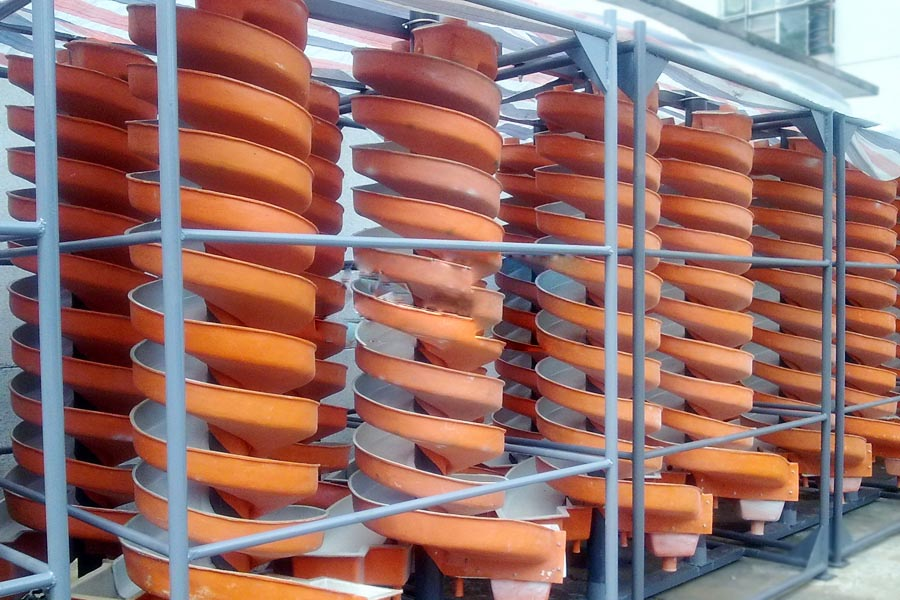
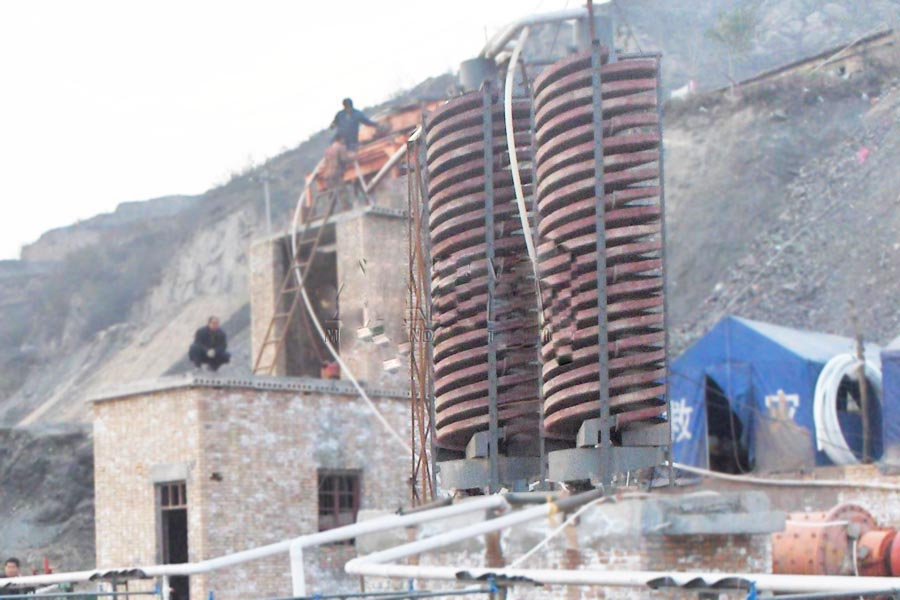

- Home >
- benefication plant >
- spiral chute

Construction waste crushing production line

Mobile construction waste crushing station for urban construction waste crushing.
spiral chute
Mine spiral chute Profile
FRP spiral chute is a combination of rotating spiral concentrator, characteristic spiral chute, shaker, centrifugal concentrator, developed in 1977 into a new national initiative of equipment, mining, beneficiation best equipment, especially the seaside, River sand beach, Creek Road placer mining is more ideal. Products with a reasonable structure, simple installation, small footprint, ease of operation, processing stability, sub-ore clear, large capacity, high efficiency beneficiation enrichment ratio, high recovery rate, reliable operation characteristics. Light weight, moisture, rust, corrosion, fluctuations in the amount of ore and concentration, particle size, grade of adaptability, no noise and other advantages.

Spiral chute concentrator uses
This device is suitable for sorting size 0.3 – 0.02 mm fines iron ore, ilmenite, chromite, pyrite, zircon, rutile, monazite, phosphorus ore B, tungsten ore, tin, tantalum ore, niobium and other non-ferrous ore proportion of differences, rare metals and non-metallic mineral body. The device has a sorting process is stable, easy to control, to allow the ore concentration range changes, enrichment ratio, high recovery rate, small footprint, water consumption, simple structure, without power, large capacity, easy to install, easy operation, small investment, quick, and other advantages.
Spiral chute technical parameters
| Model | 5LL-1200 | 5LL-900 | 5LL-600 | 5LL-400 | |
| The outer diameter（mm） | 1200 | 900 | 600 | 400 | |
| Pitch（mm） | 900/720/540 | 675/540/405 | 450/360/270 | 240/180 | |
| Distance diameter ratio (pitch / diameter) | 0.75/0.6/0.45 | 0.75/0.6/0.45 | 0.75/0.6/0.45 | 0.6/0.45 | |
| Lateral inclination (degrees) | 9° | 9° | 9° | 9° | |
| Each maximum installation screw head | 4 | 4 | 3 | 2 | |
| Feed size (mm) | 0.3-0.03 | 0.3-0.03 | 0.2-0.02 | 0.2-0.02 | |
| Ore concentration（%） | 25-55 | 25-55 | 25-55 | 25-55 | |
| Production capacity（t/h） | 4-6 | 2-3 | 0.8-1.2 | 0.15-0.2 | |
| Dimensions | length（mm） | 1360 | 1060 | 700 | 460 |
| width（mm） | 1360 | 1060 | 700 | 460 | |
| height（mm） | 5230 | 4000 | 2600 | 1500 | |
| weight（kg） | 600 | 400 | 150 | 50 | |

Spiral chute works and use
The spiral chute erected, calibrate vertical line, with a metal frame or wood fixed in place by sand pump the ore sent to the screw at the top two feed ports, adding additional water to adjust the concentration of mineral paddle, paddle mine natural down from a high swirl to produce a centrifugal force of inertia of the rotating velocity ramp to the proportion of ore, particle size, shape differences, and, by the action of gravity and centrifugal force of the cyclone will separate ore and sand, concentrate concentrate inflow pipe connected to the bucket, the tailings flow into the tailings pond sand bucket pipe received, then sand pump to drain away, to complete the whole process of dressing.
Leave Me A Message, Now
If you have any questions regarding equipment prices, production line configuration or other problems, you can send a message to us, we will contact you soon.